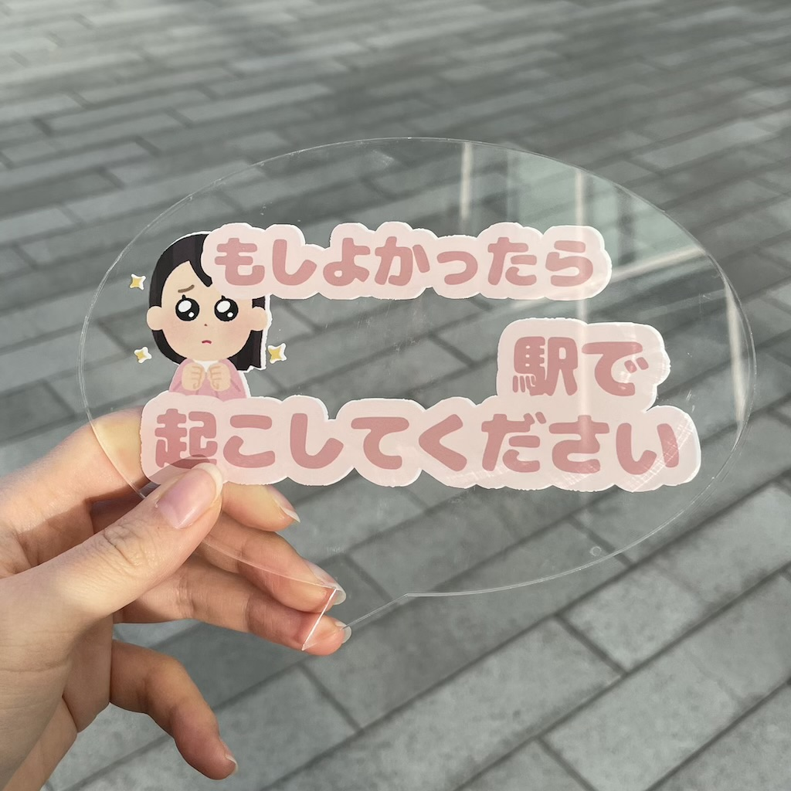
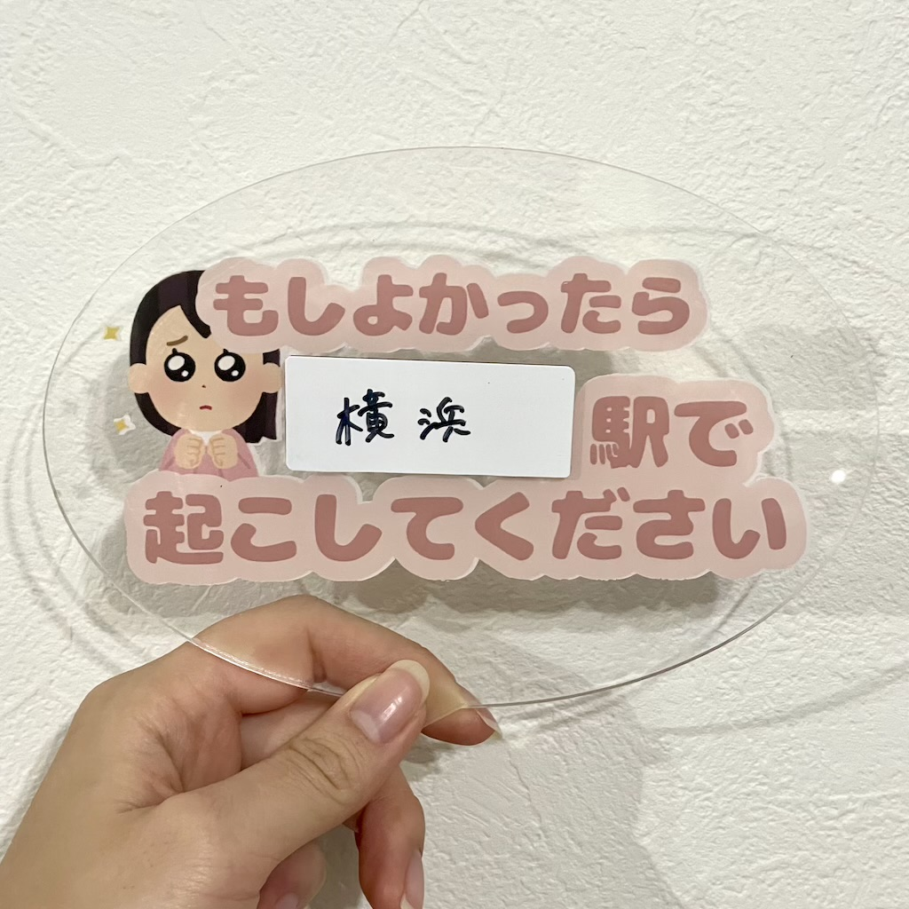
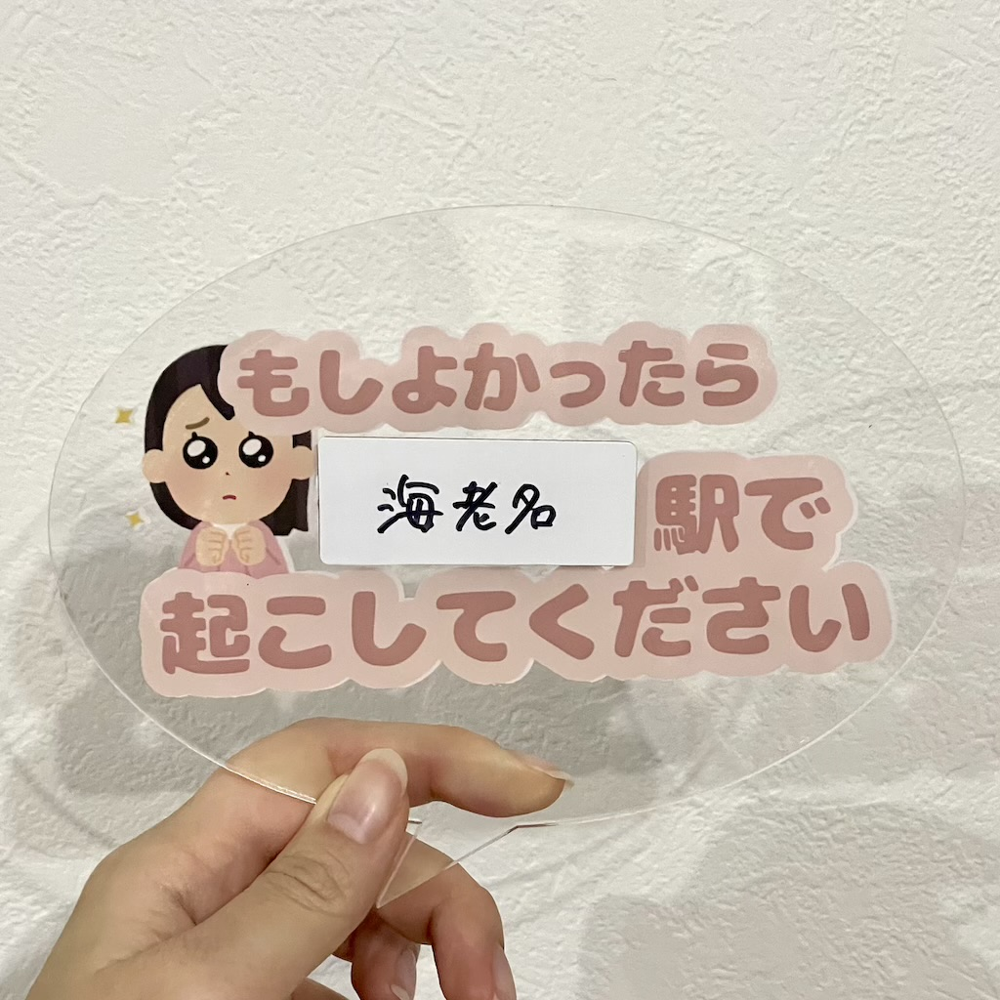

〇〇駅で起こしてください！！
~取り組むことにした問題~
私たちは「電車で人を睨んでいる人」に着目した。
周りの人からしたら睨まれていと感じで嫌だが、もしかしたら疲れてることが原因で目つきが悪くなってしまっているのではないかと考えた。
そのため私たちは、口に出して人に言いにくいことを伝えてくれる道具を作ることとした。
私はよく電車で寝過ごしてしまうため、降りたい駅で心優しい人に起こしてもらえるように「〇〇駅で起こしてください」というパネルを作ることにした。
~出来上がった作品~

実際に使用している様子を電車で撮るのは周りの人に迷惑になると考えたため、友人に協力してもらい人気の少ないところで撮影した。
空白になっている部分にホワイトボードを貼り、好きな駅名を書き込めるようにした。
私は行きが横浜駅で帰りは海老名駅で降りるため、行きと帰りで変えられると便利であると感じた。
実際に書き込むとこのような感じになる。


~この作品について~
日常の中で何気ないところにある問題を解決したく、今回の課題を制作した。
はじめは「電車で人を睨んでいる人」という問題に着目して考えていたが、そこから電車に関する他の問題を考えたところ今回の案に辿り着いた。
私は中学校の頃から電車通学をしていたが、朝電車で寝過ごして遅刻してくる友人がたくさんいた。
実際に電車の中では爆睡している人をよく見かけるため、そういった人たちが自分の降りたい駅で降りられるような手助けをしたいと考えた。
今回は横の大きさを8cmくらいにし、裏にクリップをつけることでカバンやネクタイ、頭につけられるようにするつもりでいた。
しかし、AIに移すときに画像をうまく転送することができず、約16cmととても大きなサイズになってしまった。
だがこの大きさだと字を書き込みやすく、人の視界に入りやすいという利点があるためとてもよかったと思う。
このパネルを見た人が起こしてくれるかはその人の優しさ次第になるが、無いよりは起こしてもらえるようになると思う。
この作品をInstagramのストーリーに載せたところ、何人かの友人から「欲しい！」という声が上がったため、必要とする人に使ってもらえたら嬉しい。
~使用機材~
レーザーカッター
UVプリンター
~同じ班のメンバーの作品~
げんさんのページ
同じ班のメンバーのニックネームがわかる人だけ貼りました。わからない人は金曜日の授業で聞いて貼り付けます。